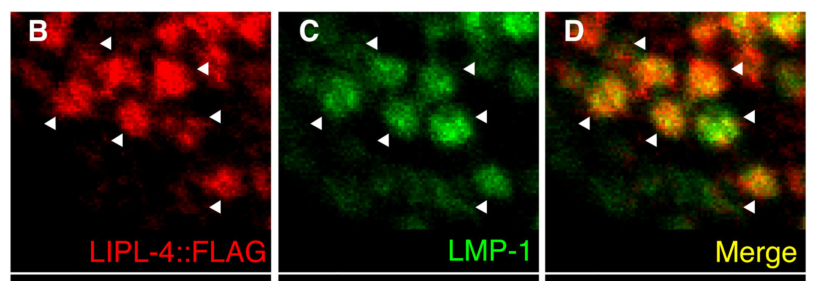

LIPL-4 is a lysosomal acid lipase in C. elegans with triacylglycerol lipase activity (EC 3.1.1.3) that functions as a key signaling enzyme in a lysosome-to-nucleus retrograde lipid signaling pathway promoting longevity. LIPL-4 localizes to the lysosomal lumen via a signal peptide and is optimally active at acidic pH. Upon fasting or germline loss, LIPL-4 is upregulated in the intestine and produces lipid signaling molecules including oleoylethanolamide (OEA) and omega-6 polyunsaturated fatty acids (PUFAs such as arachidonic acid and DGLA). OEA is carried by the lipid chaperone LBP-8 from the lysosome to the nucleus, where it directly binds and activates the nuclear hormone receptor NHR-80 (with NHR-49 as a cofactor), promoting transcription of longevity and beta-oxidation genes. Omega-6 PUFAs produced by LIPL-4 activate autophagy, contributing to lifespan extension. Constitutive overexpression of LIPL-4 extends lifespan by approximately 55%, an effect that requires lysosomal localization (signal peptide dependent). LIPL-4 expression is regulated by the transcription factors MXL-3 and HLH-30 in response to nutrient availability, and is induced by TOR inhibition. The protein belongs to the AB hydrolase superfamily lipase family and is homologous to human lysosomal acid lipase LIPA. Two isoforms exist (a and b), with isoform b lacking the N-terminal 157 residues including the signal peptide.
| GO Term | Evidence | Action | Reason |
|---|---|---|---|
|
GO:0006629
lipid metabolic process
|
IBA
GO_REF:0000033 |
ACCEPT |
Summary: IBA annotation of lipid metabolic process based on phylogenetic inference across multiple orthologs including yeast, fly, and mammalian lipases. LIPL-4 is clearly involved in lipid metabolism as a lysosomal triacylglycerol lipase that hydrolyzes triglycerides and produces fatty acid signaling molecules (PMID:21906946, PMID:25554789).
Reason: LIPL-4 is unambiguously involved in lipid metabolic process. While more specific terms exist (triglyceride catabolic process, long-chain fatty acid biosynthetic process), this broader IBA annotation is appropriate as a phylogenetically supported annotation and is not incorrect. Multiple publications confirm lipase activity and lipid metabolism roles (PMID:21906946, PMID:23392608, PMID:25554789).
Supporting Evidence:
PMID:21906946
Germline removal extends life span in C. elegans via genes such as the lipase LIPL-4
PMID:25554789
We analyzed a C. elegans longevity-promoting lipase, LIPL-4, which has sequence and functional similarities to human LIPA
file:worm/lipl-4/lipl-4-deep-research-falcon.md
Savini et al. describe lysosomal acid lipases (including LIPL-4) as releasing **free fatty acids** from **triacylglycerols (TAGs)** and **cholesteryl esters (CEs)**, situating LIPL-4 within TAG/CE lipolysis and FFA generation in intestinal lysosomes.
|
|
GO:0016298
lipase activity
|
IBA
GO_REF:0000033 |
ACCEPT |
Summary: IBA annotation of lipase activity based on phylogenetic inference. LIPL-4 has experimentally demonstrated lipase activity, specifically triacylglycerol lipase activity (PMID:21906946). Lipid hydrolysis activity was confirmed at pH 4.5 in worm lysates (PMID:25554789).
Reason: Lipase activity is well supported by multiple lines of evidence. While the more specific term triacylglycerol lipase activity (GO:0004806) is also annotated, this broader IBA annotation is appropriate as a phylogenetically supported characterization. The IBA annotation represents the consensus across the lipase family tree and is not incorrect.
Supporting Evidence:
PMID:25554789
Lipid hydrolysis activity was decreased in lipl-4(tm4417) loss-of-function mutants at pH 4.5 but not at pH 7.4
PMID:21906946
autophagy is required to maintain high lipase activity in germline-deficient animals
file:worm/lipl-4/lipl-4-deep-research-falcon.md
mutants have **reduced hydrolysis at pH 4.5 but not pH 7.4**, supporting **acid pH-dependent triglyceride lipase activity** consistent with lysosomal function.
|
|
GO:0004806
triacylglycerol lipase activity
|
IEA
GO_REF:0000120 |
ACCEPT |
Summary: IEA annotation of triacylglycerol lipase activity based on Rhea/EC mapping (EC:3.1.1.3). This is consistent with the UniProt catalytic activity annotation and the experimentally determined IMP annotation from PMID:21906946.
Reason: This IEA annotation is correct and consistent with the IMP annotation from PMID:21906946. UniProt assigns EC 3.1.1.3 based on experimental evidence from multiple publications. The triacylglycerol lipase activity is a core molecular function of LIPL-4.
Supporting Evidence:
PMID:21906946
Germline removal extends life span in C. elegans via genes such as the lipase LIPL-4
file:worm/lipl-4/lipl-4-deep-research-falcon.md
The direct biochemical assay supports activity against a **triacylglycerol** substrate (triolein).
|
|
GO:0006629
lipid metabolic process
|
IEA
GO_REF:0000002 |
ACCEPT |
Summary: IEA annotation of lipid metabolic process based on InterPro domain mapping (IPR006693, AB hydrolase lipase domain). This is consistent with the IBA annotation for the same term and with experimental evidence.
Reason: This IEA annotation is correct and redundant with the IBA annotation. The InterPro domain-based inference is sound given the established lipase function of LIPL-4. Duplicates with different evidence codes are acceptable.
Supporting Evidence:
PMID:21906946
Germline removal extends life span in C. elegans via genes such as the lipase LIPL-4
|
|
GO:0016788
hydrolase activity, acting on ester bonds
|
IEA
GO_REF:0000002 |
ACCEPT |
Summary: IEA annotation of hydrolase activity acting on ester bonds, based on InterPro domain mapping (IPR025483, eukaryotic lipase). LIPL-4 has a catalytic triad (Ser177, Asp352, His384) characteristic of the AB hydrolase superfamily and hydrolyzes ester bonds in triacylglycerols.
Reason: This is a correct but general parent term of the more specific triacylglycerol lipase activity. The IEA mapping from the eukaryotic lipase InterPro domain is appropriate. While broader than other MF annotations, it is not incorrect and reflects the domain-level inference.
Supporting Evidence:
PMID:25554789
Lipid hydrolysis activity was decreased in lipl-4(tm4417) loss-of-function mutants at pH 4.5 but not at pH 7.4
|
|
GO:0043202
lysosomal lumen
|
IEA
GO_REF:0000044 |
ACCEPT |
Summary: IEA annotation of lysosomal lumen localization based on UniProt subcellular location vocabulary mapping. UniProt annotates LIPL-4 to "Lysosome lumen" based on experimental evidence from PMID:25554789 showing FLAG-tagged LIPL-4 co-localizing with lysosomal markers in intestinal cells.
Reason: Lysosomal lumen localization is strongly supported by experimental evidence. LIPL-4 has a signal peptide (residues 1-27) required for lysosomal targeting, and its optimal activity at acidic pH is consistent with lysosomal lumen function. The signal peptide is required for both lysosomal localization and the longevity effect (PMID:25554789). This IEA correctly reflects the experimentally validated UniProt subcellular location annotation.
Supporting Evidence:
PMID:25554789
FLAG-tagged LIPL-4 protein was localized to intestinal lysosomes (Fig
PMID:25554789
Constitutive expression of LIPL-4 without the signal peptide (lipl-4 Tg no SP), which was not targeted to the lysosome, caused little extension of lifespan (fig. S4 and table S1), suggesting that the lysosomal activity of LIPL-4 is essential for its longevity effect.
file:worm/lipl-4/lipl-4-deep-research-falcon.md
A **signal peptide** required for lysosomal targeting is also required for full downstream signaling and longevity phenotypes, consistent with LIPL-4 acting from the lysosomal lumen/lysosomal compartment.
|
|
GO:0005764
lysosome
|
IDA
PMID:25554789 Aging. Lysosomal signaling molecules regulate longevity in C... |
ACCEPT |
Summary: IDA annotation of lysosome localization based on direct observation of FLAG-tagged LIPL-4 protein co-localizing with lysosomal markers in intestinal cells (PMID:25554789). The signal peptide is required for lysosomal targeting and the longevity phenotype.
Reason: Lysosomal localization is a core aspect of LIPL-4 function, experimentally demonstrated by fluorescence microscopy of tagged protein. The requirement of the signal peptide for both lysosomal localization and longevity function establishes that lysosomal localization is functionally essential (PMID:25554789).
Supporting Evidence:
PMID:25554789
FLAG-tagged LIPL-4 protein was localized to intestinal lysosomes (Fig
PMID:25554789
Constitutive expression of LIPL-4 without the signal peptide (lipl-4 Tg no SP), which was not targeted to the lysosome, caused little extension of lifespan (fig. S4 and table S1), suggesting that the lysosomal activity of LIPL-4 is essential for its longevity effect.
file:worm/lipl-4/lipl-4-deep-research-falcon.md
FLAG-tagged LIPL-4 **co-localizes with the lysosomal marker LMP-1** in **intestinal cells**, indicating LIPL-4 is a lysosomal protein in vivo.
|
|
GO:0042759
long-chain fatty acid biosynthetic process
|
IMP
PMID:25554789 Aging. Lysosomal signaling molecules regulate longevity in C... |
ACCEPT |
Summary: IMP annotation of long-chain fatty acid biosynthetic process. PMID:25554789 identified via high-throughput metabolomic profiling that lipl-4 overexpression increases abundance of several long-chain fatty acids including arachidonic acid (AA), omega-3 AA, DGLA (C20 fatty acids), and oleoylethanolamide (OEA). PMID:23392608 showed that lipl-4 induction leads to enrichment of omega-6 PUFAs.
Reason: The metabolomic data from PMID:25554789 clearly show that LIPL-4 overexpression leads to increased abundance of long-chain fatty acids. While LIPL-4 is primarily a lipase (hydrolase), its activity leads to the production/accumulation of long-chain fatty acid species and their derivatives. The term captures the biological outcome of LIPL-4 activity at the organismal level, even though the molecular mechanism is hydrolytic release of fatty acids from triacylglycerols rather than de novo biosynthesis.
Supporting Evidence:
PMID:25554789
we focused our analysis on three C20 fatty acids—arachidonic acid (AA), omega-3 arachidonic acid (omega-3 AA), and dihomo-gamma-linolenic acid (DGLA)—and oleoylethanolamide (OEA), an N-acylethanolamine fatty acid derivative
PMID:23392608
LIPL-4 overexpression is sufficient to not only enrich omega-6 PUFAs and activate autophagy, but also transcriptionally activate nutrient-responsive genes
file:worm/lipl-4/lipl-4-deep-research-falcon.md
LIPL-4 overexpression is associated with increases in several lipid species, including **oleoylethanolamide (OEA)** and PUFAs
|
|
GO:0005737
cytoplasm
|
IDA
PMID:23392608 ω-6 Polyunsaturated fatty acids extend life span through the... |
KEEP AS NON CORE |
Summary: IDA annotation of cytoplasm localization from CACAO curation of PMID:23392608. O'Rourke et al. (2013) studied LIPL-4 localization but noted that LIPL-4 does not localize to sites of active autophagy. The primary experimentally validated localization is lysosomal (PMID:25554789), which is a more specific compartment within the cytoplasm.
Reason: While cytoplasm is technically not incorrect (lysosomes are within the cytoplasm), the more specific and functionally relevant localization is lysosomal lumen (GO:0043202) as demonstrated by PMID:25554789. The CACAO annotation predates the definitive lysosomal localization study. However, it is not wrong per se, so keeping as non-core rather than removing. The lysosome annotation (GO:0005764) is the core CC annotation.
Supporting Evidence:
PMID:23392608
LIPL-4 does not localize to the sites of active autophagy
PMID:25554789
FLAG-tagged LIPL-4 protein was localized to intestinal lysosomes (Fig
|
|
GO:0010508
positive regulation of autophagy
|
IDA
PMID:23392608 ω-6 Polyunsaturated fatty acids extend life span through the... |
ACCEPT |
Summary: IDA annotation from CACAO curation of PMID:23392608. O'Rourke et al. showed that LIPL-4 overexpression activates autophagy, and that omega-6 PUFAs produced by LIPL-4 activity are the mediating signals that activate autophagy. Supplementation with omega-6 PUFAs (AA, DGLA) is sufficient to activate autophagy in both C. elegans and human cells. This is also supported by PMID:21906946 which showed that autophagy is induced in animals overexpressing LIPL-4.
Reason: Positive regulation of autophagy is a well-established function of LIPL-4, demonstrated in both PMID:23392608 and PMID:21906946. The mechanism involves LIPL-4 producing omega-6 PUFAs that serve as metabolic signals activating autophagy. This is a core biological process downstream of LIPL-4 activity. The evidence code IDA from CACAO is appropriate given that LIPL-4 overexpression directly induces autophagy markers.
Supporting Evidence:
PMID:23392608
LIPL-4 overexpression is sufficient to not only enrich omega-6 PUFAs and activate autophagy, but also transcriptionally activate nutrient-responsive genes
PMID:21906946
autophagy is induced in animals overexpressing LIPL-4 and autophagy is required for their long life span
file:worm/lipl-4/lipl-4-deep-research-falcon.md
autophagy is needed for elevated lipase activity in germline-less animals, and LIPL-4 is needed for autophagy induction in that model; TOR inhibition induces **lipl-4** expression and lipase activity, linking LIPL-4 to nutrient sensing and autophagy pathways.
|
|
GO:0004806
triacylglycerol lipase activity
|
IMP
PMID:21906946 Autophagy and lipid metabolism coordinately modulate life sp... |
ACCEPT |
Summary: IMP annotation of triacylglycerol lipase activity from WormBase curation of PMID:21906946. Lapierre et al. showed that germline-less animals have increased lipase activity that depends on lipl-4, and that lipl-4 RNAi reduces lipase activity in glp-1 mutant background. LIPL-4 was described as a neutral lipase in this paper. Later work (PMID:25554789) confirmed lipid hydrolysis activity at acidic pH and UniProt assigns EC 3.1.1.3 based on the catalytic triad.
Reason: Triacylglycerol lipase activity is the core molecular function of LIPL-4. The IMP evidence is based on the observation that lipl-4 RNAi reduces lipase activity in germline-deficient animals. UniProt assigns EC 3.1.1.3 with supporting evidence from PMID:21906946 and PMID:25554789.
Supporting Evidence:
PMID:21906946
autophagy is required to maintain high lipase activity in germline-deficient animals. Reciprocally, lipl-4 is required for autophagy induction.
PMID:25554789
Lipid hydrolysis activity was decreased in lipl-4(tm4417) loss-of-function mutants at pH 4.5 but not at pH 7.4
file:worm/lipl-4/lipl-4-deep-research-falcon.md
Experimentally, LIPL-4 shows **acid pH-dependent triglyceride lipase activity** and drives **lysosome-derived lipid signaling** that promotes longevity
|
|
GO:0008340
determination of adult lifespan
|
IMP
PMID:21906946 Autophagy and lipid metabolism coordinately modulate life sp... |
ACCEPT |
Summary: IMP annotation of determination of adult lifespan from WormBase curation of PMID:21906946. Lapierre et al. showed that lipl-4 is required for lifespan extension in germline-less animals. PMID:25554789 further showed that constitutive overexpression of lipl-4 extends lifespan by 55% and that this requires lysosomal localization. The lifespan effect operates through OEA/NHR-49/NHR-80 signaling and omega-6 PUFA-mediated autophagy activation.
Reason: Determination of adult lifespan is a core biological process for LIPL-4. Multiple publications demonstrate that LIPL-4 modulates lifespan: it is required for germline-loss-mediated longevity (PMID:21906946), its overexpression extends lifespan by 55% (PMID:25554789), and the downstream signaling molecules OEA and omega-6 PUFAs are sufficient to extend lifespan (PMID:25554789, PMID:23392608).
Supporting Evidence:
PMID:21906946
Germline removal extends life span in C. elegans via genes such as the lipase LIPL-4
PMID:25554789
A transgenic strain (lipl-4 Tg) that constitutively expressed lipl-4 in the intestine had 55% mean lifespan increase compared to wild-type (WT) animals
file:worm/lipl-4/lipl-4-deep-research-falcon.md
Lapierre et al. established that **germline-less (glp-1)** longevity requires **lipl-4**, and that **intestine-specific lipl-4 overexpression** is sufficient to extend lifespan.
file:worm/lipl-4/lipl-4-deep-research-falcon.md
**+55% mean lifespan** in a constitutive intestinal lipl-4 overexpression strain (lipl-4 Tg) in *Science* 2015.
PMID:23392608
Upon fasting, C. elegans induces the expression of a lipase, which in turn leads to an enrichment of omega-6 PUFAs. Supplementing C. elegans culture media with these omega-6 PUFAs increases their resistance to starvation and extends their life span
|
|
GO:0016239
positive regulation of macroautophagy
|
IMP
PMID:21906946 Autophagy and lipid metabolism coordinately modulate life sp... |
ACCEPT |
Summary: IMP annotation of positive regulation of macroautophagy from WormBase curation of PMID:21906946. Lapierre et al. showed that lipl-4 is required for autophagy induction in germline-less animals and that LIPL-4 overexpression induces autophagy. PMID:23392608 further demonstrated that omega-6 PUFAs produced by LIPL-4 are the signals that activate autophagy.
Reason: This is a more specific child term of GO:0010508 (positive regulation of autophagy), and both are annotated. The macroautophagy specification is appropriate given that the autophagy markers used (LGG-1/LC3, autophagosomes) specifically report on macroautophagy. Both PMID:21906946 and PMID:23392608 provide experimental evidence for this annotation. This represents a core biological process for LIPL-4.
Supporting Evidence:
PMID:21906946
autophagy is induced in animals overexpressing LIPL-4 and autophagy is required for their long life span, recapitulating observations in germline-less animals
file:worm/lipl-4/lipl-4-deep-research-falcon.md
autophagy is needed for elevated lipase activity in germline-less animals, and LIPL-4 is needed for autophagy induction in that model
PMID:23392608
Supplementation of C. elegans or human epithelial cells with these omega-6 PUFAs activates autophagy, a cell recycling mechanism that promotes starvation survival and slows aging
|
|
GO:0019433
triglyceride catabolic process
|
IMP
PMID:21906946 Autophagy and lipid metabolism coordinately modulate life sp... |
ACCEPT |
Summary: IMP annotation of triglyceride catabolic process from WormBase curation of PMID:21906946. LIPL-4 has triacylglycerol lipase activity (EC 3.1.1.3), hydrolyzing triacylglycerols to diacylglycerols and fatty acids. Lapierre et al. showed that lipl-4 contributes to lipase activity in germline-less animals and that autophagy and LIPL-4 interdependently modulate lipid homeostasis.
Reason: Triglyceride catabolic process is the direct biological process consequence of LIPL-4 triacylglycerol lipase activity. The annotation is supported by the established catalytic activity (EC 3.1.1.3) and the lipase activity measurements in PMID:21906946. This is a core biological process for LIPL-4.
Supporting Evidence:
PMID:21906946
autophagy and the lipase LIPL-4 interdependently modulate aging in germline-deficient C. elegans by maintaining lipid homeostasis to prolong life span
PMID:25554789
Lipid hydrolysis activity was decreased in lipl-4(tm4417) loss-of-function mutants at pH 4.5 but not at pH 7.4
|
The research report should be a detailed narrative explaining the function, biological processes, and localization of the gene product. Citations should be given for all claims.
You should prioritize authoritative reviews and primary scientific literature when conducting research. You can supplement
this with annotations you find in gene/protein databases, but these can be outdated or inaccurate.
We are specifically interested in the primary function of the gene - for enzymes, what reaction is catalyzed, and what is the substrate specificity? For transporters, what is the substrate? For structural proteins or adapters, what is the broader structural role? For signaling molecules, what is the role in the pathway.
We are interested in where in or outside the cell the gene product carries out its function.
We are also interested in the signaling or biochemical pathways in which the gene functions. We are less interested in broad pleiotropic effects, except where these elucidate the precise role.
Include evidence where possible. We are interested in both experimental evidence as well as inference from structure, evolution, or bioinformatic analysis. Precise studies should be prioritized over high-throughput, where available.
lipl-4 encodes LIPL-4, a lysosomal acid lipase-like enzyme expressed prominently in the intestine (major fat storage tissue) and localized to lysosomes via an N-terminal signal peptide. Experimentally, LIPL-4 shows acid pH-dependent triglyceride lipase activity and drives lysosome-derived lipid signaling that promotes longevity through at least two characterized axes: (i) LIPL-4 → lipid mediators (notably OEA) → LBP-8 → nuclear receptors NHR-49/NHR-80, and (ii) LIPL-4 → PUFA release (notably DGLA) → secreted lipid chaperone LBP-3 → neuronal NHR-49 → neuropeptide NLP-11. Recent 2024 work adds a new layer showing LIPL-4-driven longevity is associated with lysosome proteome remodeling, perinuclear lysosome clustering, and lysosome-associated AMPK and nucleoporin-dependent nuclear import. (folick2015lysosomalsignalingmolecules pages 4-10, savini2022lysosomelipidsignalling pages 1-2, ramachandran2019lysosomalsignalingpromotes pages 1-3, yu2024organelleproteomicprofiling pages 11-12)
All evidence reviewed here refers to C. elegans lipl-4 (K04A8.5) encoding LIPL-4, described as a lysosomal acid lipase and studied in intestinal lysosomes in the context of longevity and lipid signaling. This aligns with the provided UniProt record (Q94252) describing a lipase-family AB hydrolase precursor with lysosomal targeting. (folick2015lysosomalsignalingmolecules pages 4-10, lapierre2011autophagyandlipid pages 4-5, savini2022lysosomelipidsignalling pages 1-2)
LIPL-4 is a lysosomal acid lipase-like enzyme. Lysosomal acid lipases are hydrolases that function in acidic compartments to cleave ester bonds in neutral lipids, releasing fatty acids and related lipid mediators. In C. elegans, LIPL-4 is positioned as a longevity-promoting lysosomal lipase that couples lipid catabolism to organism-wide signaling. (folick2015lysosomalsignalingmolecules pages 4-10, savini2022lysosomelipidsignalling pages 1-2)
A central concept emerging from LIPL-4 studies is that lysosomes are not only degradative organelles but can generate bioactive lipid signals (lipid-derived ligands, PUFAs) that engage lipid chaperones (FABP-like proteins) and nuclear receptors, altering transcription and physiology to promote longevity. (folick2015lysosomalsignalingmolecules pages 4-10, ramachandran2019lysosomalsignalingpromotes pages 1-3, savini2022lysosomelipidsignalling pages 1-2)
Folick et al. measured lipase activity using a triglyceride substrate (\u00b3H-triolein) and showed that lipl-4(tm4417) mutants have reduced hydrolysis at pH 4.5 but not pH 7.4, supporting acid pH-dependent triglyceride lipase activity consistent with lysosomal function. (folick2015lysosomalsignalingmolecules pages 4-10)
LIPL-4 overexpression is associated with increases in several lipid species, including oleoylethanolamide (OEA) and PUFAs such as dihomo-\u03b3-linolenic acid (DGLA) and arachidonic acid (AA) (and \u03c9-3 AA). (folick2015lysosomalsignalingmolecules pages 4-10, savini2022lysosomelipidsignalling pages 1-2)
FLAG-tagged LIPL-4 co-localizes with the lysosomal marker LMP-1 in intestinal cells, indicating LIPL-4 is a lysosomal protein in vivo. (folick2015lysosomalsignalingmolecules pages 4-10, folick2015lysosomalsignalingmolecules media fb05242f)
A signal peptide required for lysosomal targeting is also required for full downstream signaling and longevity phenotypes, consistent with LIPL-4 acting from the lysosomal lumen/lysosomal compartment. (folick2015lysosomalsignalingmolecules pages 4-10)
LIPL-4 is discussed as being expressed specifically/prominently in the intestine (peripheral fat storage tissue) and acting from intestinal lysosomes to initiate distal signaling (including neuronally executed programs). (savini2022lysosomelipidsignalling pages 1-2, savini2021lysosomelipidsignaling pages 1-5)
Lapierre et al. established that germline-less (glp-1) longevity requires lipl-4, and that intestine-specific lipl-4 overexpression is sufficient to extend lifespan. They further show autophagy and LIPL-4 are interdependent: autophagy is needed for elevated lipase activity in germline-less animals, and LIPL-4 is needed for autophagy induction in that model; TOR inhibition induces lipl-4 expression and lipase activity, linking LIPL-4 to nutrient sensing and autophagy pathways. (lapierre2011autophagyandlipid pages 1-2, lapierre2011autophagyandlipid pages 4-5)
Folick et al. characterized a lysosomal lipid-signaling pathway:
- Intestinal lipl-4 overexpression induces the fatty-acid binding protein LBP-8, which can be found in lysosomes and nuclei. (folick2015lysosomalsignalingmolecules pages 1-3, folick2015lysosomalsignalingmolecules pages 4-10)
- LIPL-4 overexpression increases lipids including OEA, and OEA binds LBP-8 with ~3-fold higher affinity than several other LIPL-4-associated lipids tested. (folick2015lysosomalsignalingmolecules pages 4-10)
- LIPL-4-driven longevity requires LBP-8 and the nuclear receptors NHR-49 and NHR-80, consistent with a lysosome-generated lipid ligand being chaperoned to the nucleus to alter transcription. (folick2015lysosomalsignalingmolecules pages 4-10)
Ramachandran et al. extended the mechanistic chain by linking the LIPL-4\u2013LBP-8 axis to mitochondrial physiology: the pathway increases mitochondrial \u03b2-oxidation, alters electron transport chain complex II activity, raises mtROS, and activates JUN-1-dependent antioxidant/stress-response transcription, improving oxidative stress tolerance and promoting longevity. (ramachandran2019lysosomalsignalingpromotes pages 1-3)
Savini et al. (published in Nature Cell Biology, 2022) identified an inter-tissue signaling program initiated by intestinal LIPL-4-driven lysosomal lipolysis:
- LIPL-4 in intestinal lysosomes drives release/elevation of specific PUFAs, with DGLA highlighted as a key mediator. (savini2022lysosomelipidsignalling pages 1-2)
- A secreted lipid chaperone, LBP-3, binds specific PUFAs and is required for LIPL-4-induced neuronal changes and longevity. (savini2022lysosomelipidsignalling pages 1-2)
- Intestinal LIPL-4 signaling induces neuronal neuropeptide signaling; functional experiments show dependence on neuronal NHR-49 and neuropeptide NLP-11. (savini2022lysosomelipidsignalling pages 1-2)
Supporting mechanistic details from the 2021 preprint version include: PUFA levels are higher in lipl-4 transgenic worms; intestine-specific disruption of PUFA synthesis (fat-1 or fat-3) abrogates lipl-4-induced lifespan extension; lbp-3 loss suppresses neuropeptide induction and lipl-4 longevity; nlp-11 inactivation specifically suppresses lipl-4 longevity, while neuronal nlp-11 overexpression is sufficient to prolong lifespan. (savini2021lysosomelipidsignaling pages 5-8, savini2021lysosomelipidsignaling pages 1-5)
Yu et al. (eLife, Jan 2024, https://doi.org/10.7554/elife.85214) used lysosome immunopurification proteomics (Lyso-IP) across longevity models and found that lipl-4 transgenic worms have striking lysosome remodeling:
- 449 lysosome-enriched proteins identified in lipl-4 Tg, with only 39% overlap vs WT lysosome-enriched proteins; 61% of proteins enriched on lipl-4 Tg lysosomes were absent from WT lysosomes. (yu2024organelleproteomicprofiling pages 8-9)
- Imaging shows lipl-4 Tg lysosomes in intestinal cells are clustered perinuclearly (vs dispersed in WT), with increased perinuclear distribution (p < 0.01). (yu2024organelleproteomicprofiling pages 11-12)
- Nuclear import machinery is implicated: npp-6 RNAi suppresses lipl-4 Tg lifespan extension, and ima-3 (importin-\u03b1) RNAi blocks lipl-4 Tg longevity. (yu2024organelleproteomicprofiling pages 11-12)
- Lysosome-associated AMPK contributes: combined AAK-1/AAK-2 reduction decreases lifespan by 29% in lipl-4 Tg animals and reduces lipl-4 Tg extension from 72% to 48%. (yu2024organelleproteomicprofiling pages 11-12)
This 2024 work advances LIPL-4 biology from a lipid-mediator model to a broader view in which lysosome composition, positioning, and lysosome-coupled kinase signaling are part of the pro-longevity mechanism. (yu2024organelleproteomicprofiling pages 11-12, yu2024organelleproteomicprofiling pages 8-9)
da Silva et al. (Frontiers in Aging, Mar 2024, https://doi.org/10.3389/fragi.2024.1380016) summarize LIPL-4 as a key effector of gonad/germline-mediated longevity, emphasizing: LIPL-4 requirement for glp-1 longevity, autophagy induction via PHA-4, generation of OEA engaging LBP-8 and NHR-49/NHR-80, and increased mitochondrial \u03b2-oxidation. (silva2024decodinglifespansecrets pages 3-4)
LIPL-4 is widely used as an experimental handle to interrogate lysosomal lipolysis and lipid signaling in whole-animal physiology:
RNAi/LOF alleles (e.g., lipl-4(tm4417)) to test requirement of lysosomal lipolysis in longevity models such as germline-deficient animals. (folick2015lysosomalsignalingmolecules pages 4-10, lapierre2011autophagyandlipid pages 1-2)
Physiological paradigms
Fasting/starvation paradigms that induce lipl-4 expression and can be paired with lipid supplementation and autophagy manipulations to test causality. (johnson2019theroleof pages 2-3)
Chemical/lipid supplementation as mechanistic probes
Feeding/supplementing lipid mediators (e.g., OEA; AA/DGLA) to test downstream signaling, stress resistance, and longevity, often with autophagy as an epistasis node. (folick2015lysosomalsignalingmolecules pages 4-10, johnson2019theroleof pages 2-3, johnson2020lipidhydrolaseenzymes pages 4-6)
Assays and readouts used in practice
The following table summarizes the best-supported functional annotation elements for LIPL-4.
| Aspect | Key findings | Evidence/notes | Primary citation (include year) |
|---|---|---|---|
| Activity/substrate | LIPL-4 is a lysosomal acid lipase-like enzyme with acid pH-dependent lipase activity; it hydrolyzes triglyceride substrate and is inferred to release free fatty acids from TAGs and cholesteryl esters. | In lipl-4(tm4417) mutants, triglyceride hydrolysis of ^3H-triolein is reduced at pH 4.5 but not pH 7.4; later work frames lysosomal acid lipases as releasing FFAs from TAGs/CEs in the intestine. | Folick et al., 2015 (folick2015lysosomalsignalingmolecules pages 4-10, savini2022lysosomelipidsignalling pages 1-2) |
| Localization | LIPL-4 localizes to lysosomes in intestinal cells; earlier work also reported localization in intestinal cells and seam cells. A signal peptide is required for proper lysosomal targeting and pro-longevity function. | FLAG::LIPL-4 co-localizes with LMP-1 in intestine; removing the signal peptide largely abolishes downstream effects. Review of earlier experiments notes intestinal and seam-cell localization. | Folick et al., 2015; Lapierre et al., 2011 (folick2015lysosomalsignalingmolecules pages 4-10, lapierre2011autophagyandlipid pages 4-5, folick2015lysosomalsignalingmolecules media fb05242f) |
| Regulation | lipl-4 expression/activity is induced by germline loss, DAF-16/FOXO, TOR inhibition, fasting, and other longevity paradigms including IIS reduction. | Germline-less glp-1 animals require lipl-4 for lifespan extension; TOR inhibition increases lipl-4 mRNA and lipase activity; 2022 work reports induction by fasting and in IIS- or germline-deficient mutants. | Lapierre et al., 2011; Savini et al., 2022 (lapierre2011autophagyandlipid pages 1-2, lapierre2011autophagyandlipid pages 4-5, savini2022lysosomelipidsignalling pages 1-2) |
| Pathway/mechanism | LIPL-4 initiates lysosome-to-nucleus and intestine-to-neuron lipid signaling that promotes longevity. One arm uses LBP-8 and nuclear receptors NHR-49/NHR-80; another uses LBP-3 plus PUFAs to induce neuronal neuropeptide signaling. LIPL-4 signaling also increases mitochondrial β-oxidation and mtROS/JUN-1 responses. | LIPL-4 upregulates lbp-8, promotes nuclear LBP-8 signaling, and requires NHR-49/NHR-80; separate work shows intestinal LIPL-4→PUFA→LBP-3→neuronal NHR-49/NLP-11 signaling. Developmental Cell study links LIPL-4/LBP-8 to β-oxidation, reduced ETC complex II activity, mtROS, JUN-1, and oxidative stress tolerance. | Folick et al., 2015; Ramachandran et al., 2019; Savini et al., 2022 (folick2015lysosomalsignalingmolecules pages 4-10, ramachandran2019lysosomalsignalingpromotes pages 1-3, savini2022lysosomelipidsignalling pages 1-2, savini2021lysosomelipidsignaling pages 5-8, savini2021lysosomelipidsignaling pages 1-5) |
| Phenotypes/quantitative effects | Intestinal lipl-4 overexpression is sufficient to extend lifespan substantially and reduce fat storage; lysosomal targeting is important for full effect. | Mean lifespan increase reported as 55% in one primary study; review cites ~24% mean lifespan extension with intestinal overexpression and lean/fewer lipid droplet phenotypes; in 2024 proteomics, lipl-4 Tg lifespan extension is 72% and drops to 48% when lysosomal AMPK signaling is impaired. | Folick et al., 2015; Johnson, 2020 review summarizing primary data; Yu et al., 2024 (folick2015lysosomalsignalingmolecules pages 4-10, johnson2020lipidhydrolaseenzymes pages 4-6, yu2024organelleproteomicprofiling pages 11-12) |
| Key lipid mediators | Lipids associated with LIPL-4 signaling include oleoylethanolamide (OEA), arachidonic acid, ω-3 arachidonic acid, dihomo-γ-linolenic acid (DGLA), and broader PUFAs. | Folick et al. identified AA, ω-3 AA, DGLA, and OEA as elevated with lipl-4 overexpression; OEA binds LBP-8 with ~3-fold higher affinity than the other tested lipids. Savini et al. identified DGLA/LBP-3 as key fat-to-neuron longevity signals. | Folick et al., 2015; Savini et al., 2022 (folick2015lysosomalsignalingmolecules pages 4-10, savini2022lysosomelipidsignalling pages 1-2, savini2021lysosomelipidsignaling pages 5-8) |
| Key genetic dependencies | LIPL-4-mediated longevity depends on autophagy genes and transcriptional regulators including DAF-16, PHA-4, LBP-8, NHR-49, NHR-80, LBP-3, neuronal NLP-11, and neuropeptide processing genes; some branches are daf-16-independent downstream of LIPL-4. | Lifespan extension from lipl-4 overexpression is suppressed by bec-1, lgg-1, vps-34, pha-4 RNAi; lbp-8 loss reduces lipl-4 longevity by 46%; nhr-49/nhr-80 are required; intestine-only fat-1 or fat-3 inactivation abolishes lipl-4 Tg longevity; lbp-3 or nlp-11 loss suppresses lipl-4 Tg lifespan extension; egl-21 inactivation abolishes lipl-4 Tg longevity. | Lapierre et al., 2011; Folick et al., 2015; Savini et al., 2022/2021 (lapierre2011autophagyandlipid pages 4-5, folick2015lysosomalsignalingmolecules pages 4-10, savini2021lysosomelipidsignaling pages 5-8, savini2021lysosomelipidsignaling pages 1-5) |
Table: This table summarizes experimentally supported functional annotation for C. elegans LIPL-4, including its enzymatic activity, localization, regulatory inputs, signaling pathways, lipid mediators, and key genetic dependencies. It is useful as a compact evidence map for interpreting the molecular role of UniProt Q94252.
References
(folick2015lysosomalsignalingmolecules pages 4-10): Andrew Folick, Holly D. Oakley, Yong Yu, Eric H. Armstrong, Manju Kumari, Lucas Sanor, David D. Moore, Eric A. Ortlund, Rudolf Zechner, and Meng C. Wang. Lysosomal signaling molecules regulate longevity in caenorhabditis elegans. Science, 347:83-86, Jan 2015. URL: https://doi.org/10.1126/science.1258857, doi:10.1126/science.1258857. This article has 316 citations and is from a highest quality peer-reviewed journal.
(savini2022lysosomelipidsignalling pages 1-2): Marzia Savini, Andrew Folick, Yi-Tang Lee, Feng Jin, André Cuevas, Matthew C. Tillman, Jonathon D. Duffy, Qian Zhao, Isaiah A. Neve, Pei-Wen Hu, Yong Yu, Qinghao Zhang, Youqiong Ye, William B. Mair, Jin Wang, Leng Han, Eric A. Ortlund, and Meng C. Wang. Lysosome lipid signalling from the periphery to neurons regulates longevity. Nature Cell Biology, 24:906-916, Jun 2022. URL: https://doi.org/10.1038/s41556-022-00926-8, doi:10.1038/s41556-022-00926-8. This article has 94 citations and is from a highest quality peer-reviewed journal.
(ramachandran2019lysosomalsignalingpromotes pages 1-3): Prasanna V. Ramachandran, Marzia Savini, Andrew K. Folick, Kuang Hu, Ruchi Masand, Brett H. Graham, and Meng C. Wang. Lysosomal signaling promotes longevity by adjusting mitochondrial activity. Developmental cell, 48 5:685-696.e5, Mar 2019. URL: https://doi.org/10.1016/j.devcel.2018.12.022, doi:10.1016/j.devcel.2018.12.022. This article has 119 citations and is from a highest quality peer-reviewed journal.
(yu2024organelleproteomicprofiling pages 11-12): Yong Yu, Shihong M. Gao, Youchen Guan, Pei-Wen Hu, Qinghao Zhang, Jiaming Liu, Bentian Jing, Qian Zhao, David M Sabatini, Monther Abu-Remaileh, Sung Yun Jung, and Meng C. Wang. Organelle proteomic profiling reveals lysosomal heterogeneity in association with longevity. eLife, Jan 2024. URL: https://doi.org/10.7554/elife.85214, doi:10.7554/elife.85214. This article has 34 citations and is from a domain leading peer-reviewed journal.
(lapierre2011autophagyandlipid pages 4-5): Louis R. Lapierre, Sara Gelino, Alicia Meléndez, and Malene Hansen. Autophagy and lipid metabolism coordinately modulate life span in germline-less c. elegans. Current Biology, 21:1507-1514, Sep 2011. URL: https://doi.org/10.1016/j.cub.2011.07.042, doi:10.1016/j.cub.2011.07.042. This article has 408 citations and is from a highest quality peer-reviewed journal.
(folick2015lysosomalsignalingmolecules media fb05242f): Andrew Folick, Holly D. Oakley, Yong Yu, Eric H. Armstrong, Manju Kumari, Lucas Sanor, David D. Moore, Eric A. Ortlund, Rudolf Zechner, and Meng C. Wang. Lysosomal signaling molecules regulate longevity in caenorhabditis elegans. Science, 347:83-86, Jan 2015. URL: https://doi.org/10.1126/science.1258857, doi:10.1126/science.1258857. This article has 316 citations and is from a highest quality peer-reviewed journal.
(savini2021lysosomelipidsignaling pages 1-5): Marzia Savini, Jonathon D. Duffy, Andrew Folick, Yi-Tang Lee, Pei-Wen Hu, Isaiah A. Neve, Feng Jin, Qinghao Zhang, Matthew Tillman, Youqiong Ye, William B. Mair, Jin Wang, Leng Han, Eric A. Ortlund, and Meng C. Wang. Lysosome lipid signaling from the periphery to neurons regulates longevity. BioRxiv, Jun 2021. URL: https://doi.org/10.1101/2021.06.10.447794, doi:10.1101/2021.06.10.447794. This article has 1 citations.
(lapierre2011autophagyandlipid pages 1-2): Louis R. Lapierre, Sara Gelino, Alicia Meléndez, and Malene Hansen. Autophagy and lipid metabolism coordinately modulate life span in germline-less c. elegans. Current Biology, 21:1507-1514, Sep 2011. URL: https://doi.org/10.1016/j.cub.2011.07.042, doi:10.1016/j.cub.2011.07.042. This article has 408 citations and is from a highest quality peer-reviewed journal.
(folick2015lysosomalsignalingmolecules pages 1-3): Andrew Folick, Holly D. Oakley, Yong Yu, Eric H. Armstrong, Manju Kumari, Lucas Sanor, David D. Moore, Eric A. Ortlund, Rudolf Zechner, and Meng C. Wang. Lysosomal signaling molecules regulate longevity in caenorhabditis elegans. Science, 347:83-86, Jan 2015. URL: https://doi.org/10.1126/science.1258857, doi:10.1126/science.1258857. This article has 316 citations and is from a highest quality peer-reviewed journal.
(savini2021lysosomelipidsignaling pages 5-8): Marzia Savini, Jonathon D. Duffy, Andrew Folick, Yi-Tang Lee, Pei-Wen Hu, Isaiah A. Neve, Feng Jin, Qinghao Zhang, Matthew Tillman, Youqiong Ye, William B. Mair, Jin Wang, Leng Han, Eric A. Ortlund, and Meng C. Wang. Lysosome lipid signaling from the periphery to neurons regulates longevity. BioRxiv, Jun 2021. URL: https://doi.org/10.1101/2021.06.10.447794, doi:10.1101/2021.06.10.447794. This article has 1 citations.
(yu2024organelleproteomicprofiling pages 8-9): Yong Yu, Shihong M. Gao, Youchen Guan, Pei-Wen Hu, Qinghao Zhang, Jiaming Liu, Bentian Jing, Qian Zhao, David M Sabatini, Monther Abu-Remaileh, Sung Yun Jung, and Meng C. Wang. Organelle proteomic profiling reveals lysosomal heterogeneity in association with longevity. eLife, Jan 2024. URL: https://doi.org/10.7554/elife.85214, doi:10.7554/elife.85214. This article has 34 citations and is from a domain leading peer-reviewed journal.
(silva2024decodinglifespansecrets pages 3-4): Andre Pires da Silva, Rhianne Kelleher, and Luke Reynoldson. Decoding lifespan secrets: the role of the gonad in caenorhabditis elegans aging. Frontiers in Aging, Mar 2024. URL: https://doi.org/10.3389/fragi.2024.1380016, doi:10.3389/fragi.2024.1380016. This article has 1 citations.
(johnson2019theroleof pages 2-3): Adiv A. Johnson and Alexandra Stolzing. The role of lipid metabolism in aging, lifespan regulation, and age‐related disease. Aging Cell, Sep 2019. URL: https://doi.org/10.1111/acel.13048, doi:10.1111/acel.13048. This article has 508 citations and is from a domain leading peer-reviewed journal.
(johnson2020lipidhydrolaseenzymes pages 4-6): Adiv A. Johnson. Lipid hydrolase enzymes: pragmatic pro-longevity targets for improved human healthspan? Rejuvenation research, 23:107-121, Apr 2020. URL: https://doi.org/10.1089/rej.2019.2211, doi:10.1089/rej.2019.2211. This article has 8 citations and is from a peer-reviewed journal.
(johnson2020lipidhydrolaseenzymes pages 3-4): Adiv A. Johnson. Lipid hydrolase enzymes: pragmatic pro-longevity targets for improved human healthspan? Rejuvenation research, 23:107-121, Apr 2020. URL: https://doi.org/10.1089/rej.2019.2211, doi:10.1089/rej.2019.2211. This article has 8 citations and is from a peer-reviewed journal.
(folick2015lysosomalsignalingmolecules media f909edc4): Andrew Folick, Holly D. Oakley, Yong Yu, Eric H. Armstrong, Manju Kumari, Lucas Sanor, David D. Moore, Eric A. Ortlund, Rudolf Zechner, and Meng C. Wang. Lysosomal signaling molecules regulate longevity in caenorhabditis elegans. Science, 347:83-86, Jan 2015. URL: https://doi.org/10.1126/science.1258857, doi:10.1126/science.1258857. This article has 316 citations and is from a highest quality peer-reviewed journal.
(folick2015lysosomalsignalingmolecules media 646f11e8): Andrew Folick, Holly D. Oakley, Yong Yu, Eric H. Armstrong, Manju Kumari, Lucas Sanor, David D. Moore, Eric A. Ortlund, Rudolf Zechner, and Meng C. Wang. Lysosomal signaling molecules regulate longevity in caenorhabditis elegans. Science, 347:83-86, Jan 2015. URL: https://doi.org/10.1126/science.1258857, doi:10.1126/science.1258857. This article has 316 citations and is from a highest quality peer-reviewed journal.

lipl-4 (K04A8.5) encodes a lysosomal acid lipase in C. elegans with sequence and functional similarity to human LIPA (lysosomal acid lipase). It is a key enzyme in the lysosome-to-nucleus retrograde lipid signaling pathway that promotes longevity.
The central discovery is that LIPL-4 generates lipid signaling molecules in the lysosome, which are then transported to the nucleus by the lipid chaperone LBP-8 to activate transcription factors NHR-49 and NHR-80 PMID:25554789.
id: Q94252
gene_symbol: lipl-4
product_type: PROTEIN
status: IN_PROGRESS
taxon:
id: NCBITaxon:6239
label: Caenorhabditis elegans
description: >-
LIPL-4 is a lysosomal acid lipase in C. elegans with triacylglycerol lipase activity
(EC 3.1.1.3) that functions as a key signaling enzyme in a lysosome-to-nucleus retrograde
lipid signaling pathway promoting longevity. LIPL-4 localizes to the lysosomal lumen via
a signal peptide and is optimally active at acidic pH. Upon fasting or germline loss,
LIPL-4 is upregulated in the intestine and produces lipid signaling molecules including
oleoylethanolamide (OEA) and omega-6 polyunsaturated fatty acids (PUFAs such as arachidonic
acid and DGLA). OEA is carried by the lipid chaperone LBP-8 from the lysosome to the
nucleus, where it directly binds and activates the nuclear hormone receptor NHR-80
(with NHR-49 as a cofactor), promoting transcription of longevity and beta-oxidation
genes. Omega-6 PUFAs produced by LIPL-4 activate autophagy, contributing to lifespan
extension. Constitutive overexpression of LIPL-4 extends lifespan by approximately 55%,
an effect that requires lysosomal localization (signal peptide dependent). LIPL-4 expression
is regulated by the transcription factors MXL-3 and HLH-30 in response to nutrient
availability, and is induced by TOR inhibition. The protein belongs to the AB hydrolase
superfamily lipase family and is homologous to human lysosomal acid lipase LIPA.
Two isoforms exist (a and b), with isoform b lacking the N-terminal 157 residues
including the signal peptide.
alternative_products:
- name: a {ECO:0000312|WormBase:K04A8.5a}
id: Q94252-1
- name: b {ECO:0000312|WormBase:K04A8.5b}
id: Q94252-2
sequence_note: VSP_060544
existing_annotations:
- term:
id: GO:0006629
label: lipid metabolic process
evidence_type: IBA
original_reference_id: GO_REF:0000033
review:
summary: >-
IBA annotation of lipid metabolic process based on phylogenetic inference across
multiple orthologs including yeast, fly, and mammalian lipases. LIPL-4 is clearly
involved in lipid metabolism as a lysosomal triacylglycerol lipase that hydrolyzes
triglycerides and produces fatty acid signaling molecules (PMID:21906946, PMID:25554789).
action: ACCEPT
reason: >-
LIPL-4 is unambiguously involved in lipid metabolic process. While more specific
terms exist (triglyceride catabolic process, long-chain fatty acid biosynthetic process),
this broader IBA annotation is appropriate as a phylogenetically supported annotation
and is not incorrect. Multiple publications confirm lipase activity and lipid metabolism
roles (PMID:21906946, PMID:23392608, PMID:25554789).
additional_reference_ids:
- file:worm/lipl-4/lipl-4-deep-research-falcon.md
supported_by:
- reference_id: PMID:21906946
supporting_text: >-
Germline removal extends life span in C. elegans via genes such as the lipase LIPL-4
- reference_id: PMID:25554789
supporting_text: >-
We analyzed a C. elegans longevity-promoting lipase, LIPL-4, which has sequence and
functional similarities to human LIPA
- reference_id: file:worm/lipl-4/lipl-4-deep-research-falcon.md
supporting_text: |-
Savini et al. describe lysosomal acid lipases (including LIPL-4) as releasing **free fatty acids** from **triacylglycerols (TAGs)** and **cholesteryl esters (CEs)**, situating LIPL-4 within TAG/CE lipolysis and FFA generation in intestinal lysosomes.
- term:
id: GO:0016298
label: lipase activity
evidence_type: IBA
original_reference_id: GO_REF:0000033
review:
summary: >-
IBA annotation of lipase activity based on phylogenetic inference. LIPL-4 has
experimentally demonstrated lipase activity, specifically triacylglycerol lipase
activity (PMID:21906946). Lipid hydrolysis activity was confirmed at pH 4.5 in
worm lysates (PMID:25554789).
action: ACCEPT
reason: >-
Lipase activity is well supported by multiple lines of evidence. While the more
specific term triacylglycerol lipase activity (GO:0004806) is also annotated,
this broader IBA annotation is appropriate as a phylogenetically supported
characterization. The IBA annotation represents the consensus across the lipase
family tree and is not incorrect.
additional_reference_ids:
- file:worm/lipl-4/lipl-4-deep-research-falcon.md
supported_by:
- reference_id: PMID:25554789
supporting_text: >-
Lipid hydrolysis activity was decreased in lipl-4(tm4417) loss-of-function mutants
at pH 4.5 but not at pH 7.4
- reference_id: PMID:21906946
supporting_text: >-
autophagy is required to maintain high lipase activity in germline-deficient animals
- reference_id: file:worm/lipl-4/lipl-4-deep-research-falcon.md
supporting_text: |-
mutants have **reduced hydrolysis at pH 4.5 but not pH 7.4**, supporting **acid pH-dependent triglyceride lipase activity** consistent with lysosomal function.
- term:
id: GO:0004806
label: triacylglycerol lipase activity
evidence_type: IEA
original_reference_id: GO_REF:0000120
review:
summary: >-
IEA annotation of triacylglycerol lipase activity based on Rhea/EC mapping
(EC:3.1.1.3). This is consistent with the UniProt catalytic activity annotation
and the experimentally determined IMP annotation from PMID:21906946.
action: ACCEPT
reason: >-
This IEA annotation is correct and consistent with the IMP annotation from
PMID:21906946. UniProt assigns EC 3.1.1.3 based on experimental evidence from
multiple publications. The triacylglycerol lipase activity is a core molecular
function of LIPL-4.
additional_reference_ids:
- file:worm/lipl-4/lipl-4-deep-research-falcon.md
supported_by:
- reference_id: PMID:21906946
supporting_text: >-
Germline removal extends life span in C. elegans via genes such as the lipase LIPL-4
- reference_id: file:worm/lipl-4/lipl-4-deep-research-falcon.md
supporting_text: |-
The direct biochemical assay supports activity against a **triacylglycerol** substrate (triolein).
- term:
id: GO:0006629
label: lipid metabolic process
evidence_type: IEA
original_reference_id: GO_REF:0000002
review:
summary: >-
IEA annotation of lipid metabolic process based on InterPro domain mapping
(IPR006693, AB hydrolase lipase domain). This is consistent with the IBA
annotation for the same term and with experimental evidence.
action: ACCEPT
reason: >-
This IEA annotation is correct and redundant with the IBA annotation. The InterPro
domain-based inference is sound given the established lipase function of LIPL-4.
Duplicates with different evidence codes are acceptable.
supported_by:
- reference_id: PMID:21906946
supporting_text: >-
Germline removal extends life span in C. elegans via genes such as the lipase LIPL-4
- term:
id: GO:0016788
label: hydrolase activity, acting on ester bonds
evidence_type: IEA
original_reference_id: GO_REF:0000002
review:
summary: >-
IEA annotation of hydrolase activity acting on ester bonds, based on InterPro
domain mapping (IPR025483, eukaryotic lipase). LIPL-4 has a catalytic triad
(Ser177, Asp352, His384) characteristic of the AB hydrolase superfamily
and hydrolyzes ester bonds in triacylglycerols.
action: ACCEPT
reason: >-
This is a correct but general parent term of the more specific triacylglycerol
lipase activity. The IEA mapping from the eukaryotic lipase InterPro domain is
appropriate. While broader than other MF annotations, it is not incorrect and
reflects the domain-level inference.
supported_by:
- reference_id: PMID:25554789
supporting_text: >-
Lipid hydrolysis activity was decreased in lipl-4(tm4417) loss-of-function mutants
at pH 4.5 but not at pH 7.4
- term:
id: GO:0043202
label: lysosomal lumen
evidence_type: IEA
original_reference_id: GO_REF:0000044
review:
summary: >-
IEA annotation of lysosomal lumen localization based on UniProt subcellular location
vocabulary mapping. UniProt annotates LIPL-4 to "Lysosome lumen" based on
experimental evidence from PMID:25554789 showing FLAG-tagged LIPL-4 co-localizing
with lysosomal markers in intestinal cells.
action: ACCEPT
reason: >-
Lysosomal lumen localization is strongly supported by experimental evidence.
LIPL-4 has a signal peptide (residues 1-27) required for lysosomal targeting,
and its optimal activity at acidic pH is consistent with lysosomal lumen function.
The signal peptide is required for both lysosomal localization and the longevity
effect (PMID:25554789). This IEA correctly reflects the experimentally validated
UniProt subcellular location annotation.
additional_reference_ids:
- file:worm/lipl-4/lipl-4-deep-research-falcon.md
supported_by:
- reference_id: PMID:25554789
supporting_text: >-
FLAG-tagged LIPL-4 protein was localized to intestinal lysosomes (Fig
- reference_id: PMID:25554789
supporting_text: >-
Constitutive expression of LIPL-4 without the signal peptide (lipl-4 Tg no SP),
which was not targeted to the lysosome, caused little extension of lifespan (fig.
S4 and table S1), suggesting that the lysosomal activity of LIPL-4 is essential
for its longevity effect.
- reference_id: file:worm/lipl-4/lipl-4-deep-research-falcon.md
supporting_text: |-
A **signal peptide** required for lysosomal targeting is also required for full downstream signaling and longevity phenotypes, consistent with LIPL-4 acting from the lysosomal lumen/lysosomal compartment.
- term:
id: GO:0005764
label: lysosome
evidence_type: IDA
original_reference_id: PMID:25554789
review:
summary: >-
IDA annotation of lysosome localization based on direct observation of FLAG-tagged
LIPL-4 protein co-localizing with lysosomal markers in intestinal cells
(PMID:25554789). The signal peptide is required for lysosomal targeting and the
longevity phenotype.
action: ACCEPT
reason: >-
Lysosomal localization is a core aspect of LIPL-4 function, experimentally
demonstrated by fluorescence microscopy of tagged protein. The requirement of the
signal peptide for both lysosomal localization and longevity function establishes
that lysosomal localization is functionally essential (PMID:25554789).
additional_reference_ids:
- file:worm/lipl-4/lipl-4-deep-research-falcon.md
supported_by:
- reference_id: PMID:25554789
supporting_text: >-
FLAG-tagged LIPL-4 protein was localized to intestinal lysosomes (Fig
- reference_id: PMID:25554789
supporting_text: >-
Constitutive expression of LIPL-4 without the signal peptide (lipl-4 Tg no SP),
which was not targeted to the lysosome, caused little extension of lifespan (fig.
S4 and table S1), suggesting that the lysosomal activity of LIPL-4 is essential
for its longevity effect.
- reference_id: file:worm/lipl-4/lipl-4-deep-research-falcon.md
supporting_text: |-
FLAG-tagged LIPL-4 **co-localizes with the lysosomal marker LMP-1** in **intestinal cells**, indicating LIPL-4 is a lysosomal protein in vivo.
- term:
id: GO:0042759
label: long-chain fatty acid biosynthetic process
evidence_type: IMP
original_reference_id: PMID:25554789
review:
summary: >-
IMP annotation of long-chain fatty acid biosynthetic process. PMID:25554789
identified via high-throughput metabolomic profiling that lipl-4 overexpression
increases abundance of several long-chain fatty acids including arachidonic acid (AA),
omega-3 AA, DGLA (C20 fatty acids), and oleoylethanolamide (OEA). PMID:23392608
showed that lipl-4 induction leads to enrichment of omega-6 PUFAs.
action: ACCEPT
reason: >-
The metabolomic data from PMID:25554789 clearly show that LIPL-4 overexpression
leads to increased abundance of long-chain fatty acids. While LIPL-4 is primarily
a lipase (hydrolase), its activity leads to the production/accumulation of
long-chain fatty acid species and their derivatives. The term captures the
biological outcome of LIPL-4 activity at the organismal level, even though the
molecular mechanism is hydrolytic release of fatty acids from triacylglycerols
rather than de novo biosynthesis.
additional_reference_ids:
- file:worm/lipl-4/lipl-4-deep-research-falcon.md
supported_by:
- reference_id: PMID:25554789
supporting_text: >-
we focused our analysis on three C20 fatty acids—arachidonic acid (AA), omega-3
arachidonic acid (omega-3 AA), and dihomo-gamma-linolenic acid (DGLA)—and
oleoylethanolamide (OEA), an N-acylethanolamine fatty acid derivative
- reference_id: PMID:23392608
supporting_text: >-
LIPL-4 overexpression is sufficient to not only enrich omega-6 PUFAs and activate
autophagy, but also transcriptionally activate nutrient-responsive genes
- reference_id: file:worm/lipl-4/lipl-4-deep-research-falcon.md
supporting_text: |-
LIPL-4 overexpression is associated with increases in several lipid species, including **oleoylethanolamide (OEA)** and PUFAs
- term:
id: GO:0005737
label: cytoplasm
evidence_type: IDA
original_reference_id: PMID:23392608
review:
summary: >-
IDA annotation of cytoplasm localization from CACAO curation of PMID:23392608.
O'Rourke et al. (2013) studied LIPL-4 localization but noted that LIPL-4 does not
localize to sites of active autophagy. The primary experimentally validated
localization is lysosomal (PMID:25554789), which is a more specific compartment
within the cytoplasm.
action: KEEP_AS_NON_CORE
reason: >-
While cytoplasm is technically not incorrect (lysosomes are within the cytoplasm),
the more specific and functionally relevant localization is lysosomal lumen
(GO:0043202) as demonstrated by PMID:25554789. The CACAO annotation predates the
definitive lysosomal localization study. However, it is not wrong per se, so
keeping as non-core rather than removing. The lysosome annotation (GO:0005764)
is the core CC annotation.
supported_by:
- reference_id: PMID:23392608
supporting_text: >-
LIPL-4 does not localize to the sites of active autophagy
- reference_id: PMID:25554789
supporting_text: >-
FLAG-tagged LIPL-4 protein was localized to intestinal lysosomes (Fig
- term:
id: GO:0010508
label: positive regulation of autophagy
evidence_type: IDA
original_reference_id: PMID:23392608
review:
summary: >-
IDA annotation from CACAO curation of PMID:23392608. O'Rourke et al. showed that
LIPL-4 overexpression activates autophagy, and that omega-6 PUFAs produced by
LIPL-4 activity are the mediating signals that activate autophagy. Supplementation
with omega-6 PUFAs (AA, DGLA) is sufficient to activate autophagy in both C. elegans
and human cells. This is also supported by PMID:21906946 which showed that autophagy
is induced in animals overexpressing LIPL-4.
action: ACCEPT
reason: >-
Positive regulation of autophagy is a well-established function of LIPL-4,
demonstrated in both PMID:23392608 and PMID:21906946. The mechanism involves
LIPL-4 producing omega-6 PUFAs that serve as metabolic signals activating
autophagy. This is a core biological process downstream of LIPL-4 activity.
The evidence code IDA from CACAO is appropriate given that LIPL-4 overexpression
directly induces autophagy markers.
additional_reference_ids:
- file:worm/lipl-4/lipl-4-deep-research-falcon.md
supported_by:
- reference_id: PMID:23392608
supporting_text: >-
LIPL-4 overexpression is sufficient to not only enrich omega-6 PUFAs and activate
autophagy, but also transcriptionally activate nutrient-responsive genes
- reference_id: PMID:21906946
supporting_text: >-
autophagy is induced in animals overexpressing LIPL-4 and autophagy is required
for their long life span
- reference_id: file:worm/lipl-4/lipl-4-deep-research-falcon.md
supporting_text: |-
autophagy is needed for elevated lipase activity in germline-less animals, and LIPL-4 is needed for autophagy induction in that model; TOR inhibition induces **lipl-4** expression and lipase activity, linking LIPL-4 to nutrient sensing and autophagy pathways.
- term:
id: GO:0004806
label: triacylglycerol lipase activity
evidence_type: IMP
original_reference_id: PMID:21906946
review:
summary: >-
IMP annotation of triacylglycerol lipase activity from WormBase curation of
PMID:21906946. Lapierre et al. showed that germline-less animals have increased
lipase activity that depends on lipl-4, and that lipl-4 RNAi reduces lipase activity
in glp-1 mutant background. LIPL-4 was described as a neutral lipase in this paper.
Later work (PMID:25554789) confirmed lipid hydrolysis activity at acidic pH and
UniProt assigns EC 3.1.1.3 based on the catalytic triad.
action: ACCEPT
reason: >-
Triacylglycerol lipase activity is the core molecular function of LIPL-4. The IMP
evidence is based on the observation that lipl-4 RNAi reduces lipase activity in
germline-deficient animals. UniProt assigns EC 3.1.1.3 with supporting evidence
from PMID:21906946 and PMID:25554789.
additional_reference_ids:
- file:worm/lipl-4/lipl-4-deep-research-falcon.md
supported_by:
- reference_id: PMID:21906946
supporting_text: >-
autophagy is required to maintain high lipase activity in germline-deficient animals.
Reciprocally, lipl-4 is required for autophagy induction.
- reference_id: PMID:25554789
supporting_text: >-
Lipid hydrolysis activity was decreased in lipl-4(tm4417) loss-of-function mutants
at pH 4.5 but not at pH 7.4
- reference_id: file:worm/lipl-4/lipl-4-deep-research-falcon.md
supporting_text: |-
Experimentally, LIPL-4 shows **acid pH-dependent triglyceride lipase activity** and drives **lysosome-derived lipid signaling** that promotes longevity
- term:
id: GO:0008340
label: determination of adult lifespan
evidence_type: IMP
original_reference_id: PMID:21906946
review:
summary: >-
IMP annotation of determination of adult lifespan from WormBase curation of
PMID:21906946. Lapierre et al. showed that lipl-4 is required for lifespan extension
in germline-less animals. PMID:25554789 further showed that constitutive
overexpression of lipl-4 extends lifespan by 55% and that this requires lysosomal
localization. The lifespan effect operates through OEA/NHR-49/NHR-80 signaling
and omega-6 PUFA-mediated autophagy activation.
action: ACCEPT
reason: >-
Determination of adult lifespan is a core biological process for LIPL-4. Multiple
publications demonstrate that LIPL-4 modulates lifespan: it is required for
germline-loss-mediated longevity (PMID:21906946), its overexpression extends lifespan
by 55% (PMID:25554789), and the downstream signaling molecules OEA and omega-6 PUFAs
are sufficient to extend lifespan (PMID:25554789, PMID:23392608).
additional_reference_ids:
- file:worm/lipl-4/lipl-4-deep-research-falcon.md
supported_by:
- reference_id: PMID:21906946
supporting_text: >-
Germline removal extends life span in C. elegans via genes such as the lipase LIPL-4
- reference_id: PMID:25554789
supporting_text: >-
A transgenic strain (lipl-4 Tg) that constitutively expressed lipl-4 in the intestine
had 55% mean lifespan increase compared to wild-type (WT) animals
- reference_id: file:worm/lipl-4/lipl-4-deep-research-falcon.md
supporting_text: |-
Lapierre et al. established that **germline-less (glp-1)** longevity requires **lipl-4**, and that **intestine-specific lipl-4 overexpression** is sufficient to extend lifespan.
- reference_id: file:worm/lipl-4/lipl-4-deep-research-falcon.md
supporting_text: |-
**+55% mean lifespan** in a constitutive intestinal lipl-4 overexpression strain (lipl-4 Tg) in *Science* 2015.
- reference_id: PMID:23392608
supporting_text: >-
Upon fasting, C. elegans induces the expression of a lipase, which in turn leads to an
enrichment of omega-6 PUFAs. Supplementing C. elegans culture media with these omega-6
PUFAs increases their resistance to starvation and extends their life span
- term:
id: GO:0016239
label: positive regulation of macroautophagy
evidence_type: IMP
original_reference_id: PMID:21906946
review:
summary: >-
IMP annotation of positive regulation of macroautophagy from WormBase curation
of PMID:21906946. Lapierre et al. showed that lipl-4 is required for autophagy
induction in germline-less animals and that LIPL-4 overexpression induces autophagy.
PMID:23392608 further demonstrated that omega-6 PUFAs produced by LIPL-4 are the
signals that activate autophagy.
action: ACCEPT
reason: >-
This is a more specific child term of GO:0010508 (positive regulation of autophagy),
and both are annotated. The macroautophagy specification is appropriate given that
the autophagy markers used (LGG-1/LC3, autophagosomes) specifically report on
macroautophagy. Both PMID:21906946 and PMID:23392608 provide experimental evidence
for this annotation. This represents a core biological process for LIPL-4.
additional_reference_ids:
- file:worm/lipl-4/lipl-4-deep-research-falcon.md
supported_by:
- reference_id: PMID:21906946
supporting_text: >-
autophagy is induced in animals overexpressing LIPL-4 and autophagy is required for
their long life span, recapitulating observations in germline-less animals
- reference_id: file:worm/lipl-4/lipl-4-deep-research-falcon.md
supporting_text: |-
autophagy is needed for elevated lipase activity in germline-less animals, and LIPL-4 is needed for autophagy induction in that model
- reference_id: PMID:23392608
supporting_text: >-
Supplementation of C. elegans or human epithelial cells with these omega-6 PUFAs
activates autophagy, a cell recycling mechanism that promotes starvation survival
and slows aging
- term:
id: GO:0019433
label: triglyceride catabolic process
evidence_type: IMP
original_reference_id: PMID:21906946
review:
summary: >-
IMP annotation of triglyceride catabolic process from WormBase curation of
PMID:21906946. LIPL-4 has triacylglycerol lipase activity (EC 3.1.1.3),
hydrolyzing triacylglycerols to diacylglycerols and fatty acids. Lapierre et al.
showed that lipl-4 contributes to lipase activity in germline-less animals and
that autophagy and LIPL-4 interdependently modulate lipid homeostasis.
action: ACCEPT
reason: >-
Triglyceride catabolic process is the direct biological process consequence of
LIPL-4 triacylglycerol lipase activity. The annotation is supported by the
established catalytic activity (EC 3.1.1.3) and the lipase activity measurements
in PMID:21906946. This is a core biological process for LIPL-4.
supported_by:
- reference_id: PMID:21906946
supporting_text: >-
autophagy and the lipase LIPL-4 interdependently modulate aging in germline-deficient
C. elegans by maintaining lipid homeostasis to prolong life span
- reference_id: PMID:25554789
supporting_text: >-
Lipid hydrolysis activity was decreased in lipl-4(tm4417) loss-of-function mutants
at pH 4.5 but not at pH 7.4
references:
- id: GO_REF:0000002
title: Gene Ontology annotation through association of InterPro records with GO terms
findings:
- statement: >-
InterPro domains IPR006693 (AB hydrolase lipase) and IPR025483 (eukaryotic lipase) map to
lipid metabolic process and hydrolase activity acting on ester bonds, respectively.
- id: GO_REF:0000033
title: Annotation inferences using phylogenetic trees
findings:
- statement: >-
Phylogenetic analysis by PANTHER/GO_Central supports lipase activity and lipid metabolic
process annotations for LIPL-4 based on conservation across eukaryotic lipase family members
including yeast, fly, and mammalian orthologs.
- id: GO_REF:0000044
title: >-
Gene Ontology annotation based on UniProtKB/Swiss-Prot Subcellular Location vocabulary
mapping, accompanied by conservative changes to GO terms applied by UniProt
findings:
- statement: >-
UniProt subcellular location annotation of lysosome lumen is mapped to GO:0043202.
This is based on experimental evidence from PMID:25554789.
- id: GO_REF:0000120
title: Combined Automated Annotation using Multiple IEA Methods
findings:
- statement: >-
Rhea reaction mapping from EC 3.1.1.3 supports triacylglycerol lipase activity annotation.
- id: PMID:21906946
title: >-
Autophagy and lipid metabolism coordinately modulate life span in germline-less C. elegans.
findings:
- statement: >-
LIPL-4 has triacylglycerol lipase activity. In germline-less (glp-1) animals, lipl-4
is required for increased lipase activity and for autophagy induction. Reciprocally,
autophagy is required to maintain high LIPL-4-dependent lipase activity. LIPL-4
overexpression induces autophagy and extends lifespan, and autophagy is required for
this lifespan extension. TOR inhibition induces lipl-4 expression.
supporting_text: >-
autophagy is required to maintain high lipase activity in germline-deficient animals.
Reciprocally, lipl-4 is required for autophagy induction.
- id: PMID:23392608
title: >-
ω-6 Polyunsaturated fatty acids extend life span through the activation of autophagy.
findings:
- statement: >-
Upon fasting, LIPL-4 induction leads to enrichment of omega-6 PUFAs (AA, DGLA) that
serve as metabolic signals activating autophagy. Supplementation with these omega-6
PUFAs extends C. elegans lifespan and activates autophagy in both worms and human cells.
LIPL-4 overexpression also transcriptionally activates nutrient-responsive genes
including fatty acid-binding proteins lbp-3 and lbp-5.
supporting_text: >-
LIPL-4 overexpression is sufficient to not only enrich omega-6 PUFAs and activate
autophagy, but also transcriptionally activate nutrient-responsive genes
- statement: >-
LIPL-4 does not localize to sites of active autophagy, suggesting it is not directly
involved in lipophagy but rather produces signaling lipids that activate autophagy.
supporting_text: >-
LIPL-4 does not localize to the sites of active autophagy
- id: PMID:25554789
title: >-
Aging. Lysosomal signaling molecules regulate longevity in Caenorhabditis elegans.
findings:
- statement: >-
LIPL-4 localizes to intestinal lysosomes (FLAG-tagged protein). Lipid hydrolysis
activity is reduced in lipl-4 loss-of-function mutants at pH 4.5 but not pH 7.4,
confirming acid lipase activity. Constitutive lipl-4 expression extends lifespan by
55%, requiring the signal peptide for lysosomal targeting. Metabolomic profiling
identified increased abundance of C20 fatty acids (AA, omega-3 AA, DGLA) and OEA in
lipl-4 Tg animals. OEA binds LBP-8 and directly activates NHR-80, promoting longevity
gene transcription through a lysosome-to-nucleus signaling pathway.
supporting_text: >-
FLAG-tagged LIPL-4 protein was localized to intestinal lysosomes (Fig. 1, B–D and fig. S2).
- statement: >-
The signal peptide is required for lysosomal localization and the longevity effect.
LIPL-4 without signal peptide is not targeted to lysosomes and causes little lifespan
extension.
supporting_text: >-
Constitutive expression of LIPL-4 without the signal peptide (lipl-4 Tg no SP), which
was not targeted to the lysosome, caused little extension of lifespan (fig. S4 and table S1),
suggesting that the lysosomal activity of LIPL-4 is essential for its longevity effect.
- id: file:worm/lipl-4/lipl-4-deep-research-falcon.md
title: Falcon deep research report on lipl-4 (C. elegans)
findings:
- statement: |
LIPL-4 is a lysosomal acid lipase-like AB-hydrolase expressed prominently in the
intestine and localized to lysosomes via an N-terminal signal peptide, where it
shows acid pH-dependent triglyceride lipase activity that drives lysosome-derived
lipid signaling promoting longevity.
supporting_text: |-
**lipl-4** encodes **LIPL-4**, a **lysosomal acid lipase-like** enzyme expressed prominently in the **intestine** (major fat storage tissue) and localized to **lysosomes** via an N-terminal signal peptide. Experimentally, LIPL-4 shows **acid pH-dependent triglyceride lipase activity** and drives **lysosome-derived lipid signaling** that promotes longevity
reference_section_type: RESULTS
- statement: |
Lysosomal acid lipases including LIPL-4 release free fatty acids from
triacylglycerols and cholesteryl esters in intestinal lysosomes.
supporting_text: |-
Savini et al. describe lysosomal acid lipases (including LIPL-4) as releasing **free fatty acids** from **triacylglycerols (TAGs)** and **cholesteryl esters (CEs)**, situating LIPL-4 within TAG/CE lipolysis and FFA generation in intestinal lysosomes.
reference_section_type: RESULTS
- statement: |
FLAG-tagged LIPL-4 co-localizes with the lysosomal marker LMP-1 in intestinal
cells, and its signal peptide is required for lysosomal targeting and for full
downstream signaling and longevity.
supporting_text: |-
FLAG-tagged LIPL-4 **co-localizes with the lysosomal marker LMP-1** in **intestinal cells**, indicating LIPL-4 is a lysosomal protein in vivo.
reference_section_type: RESULTS
- statement: |
One pro-longevity arm of LIPL-4 signaling acts via the lipid chaperone LBP-8
and nuclear receptors NHR-49 and NHR-80, with OEA binding LBP-8 with about
3-fold higher affinity than other LIPL-4-associated lipids.
supporting_text: |-
LIPL-4-driven longevity requires **LBP-8** and the nuclear receptors **NHR-49** and **NHR-80**, consistent with a lysosome-generated lipid ligand being chaperoned to the nucleus to alter transcription.
reference_section_type: RESULTS
- statement: |
The LIPL-4/LBP-8 axis links to mitochondrial physiology, increasing beta-oxidation,
raising mtROS, and activating JUN-1-dependent stress-response transcription that
improves oxidative stress tolerance and promotes longevity.
supporting_text: |-
LIPL-4 signaling also increases mitochondrial β-oxidation and mtROS/JUN-1 responses.
reference_section_type: RESULTS
- statement: |
A second, intestine-to-neuron arm uses the secreted lipid chaperone LBP-3 binding
specific PUFAs (notably DGLA) and acting through neuronal NHR-49 and the
neuropeptide NLP-11 to promote longevity.
supporting_text: |-
A secreted lipid chaperone, **LBP-3**, binds specific PUFAs and is required for LIPL-4-induced neuronal changes and longevity.
reference_section_type: RESULTS
- statement: |
Intestinal LIPL-4 signaling induces neuronal neuropeptide signaling dependent on
neuronal NHR-49 and the neuropeptide NLP-11, with DGLA highlighted as a key
PUFA mediator.
supporting_text: |-
Intestinal LIPL-4 signaling induces neuronal **neuropeptide signaling**; functional experiments show dependence on neuronal **NHR-49** and neuropeptide **NLP-11**.
reference_section_type: RESULTS
- statement: |
2024 lysosome immunopurification proteomics shows lipl-4 transgenic worms have
extensive lysosome proteome remodeling (449 lysosome-enriched proteins, only 39%
overlap with WT) and perinuclear lysosome clustering in intestinal cells.
supporting_text: |-
**449 lysosome-enriched proteins** identified in lipl-4 Tg, with only **39% overlap** vs WT lysosome-enriched proteins; **61%** of proteins enriched on lipl-4 Tg lysosomes were absent from WT lysosomes.
reference_section_type: RESULTS
- statement: |
lipl-4 transgenic longevity depends on nuclear import machinery (npp-6 nucleoporin,
ima-3 importin-alpha) and lysosome-associated AMPK; impairing AMPK reduces the
lipl-4 Tg lifespan extension from 72% to 48%.
supporting_text: |-
reduces lipl-4 Tg extension from **72% to 48%**.
reference_section_type: RESULTS
core_functions:
- description: >-
LIPL-4 is a lysosomal acid lipase that hydrolyzes triacylglycerols at acidic pH
in the lysosomal lumen, producing oleoylethanolamide (OEA) and omega-6
polyunsaturated fatty acids (arachidonic acid, DGLA) as lipid signaling
molecules. These signals mediate a lysosome-to-nucleus retrograde signaling
pathway: OEA is transported by LBP-8 to the nucleus where it activates
NHR-49/NHR-80 to promote beta-oxidation and longevity gene transcription.
molecular_function:
id: GO:0004806
label: triacylglycerol lipase activity
directly_involved_in:
- id: GO:0019433
label: triglyceride catabolic process
- id: GO:0042759
label: long-chain fatty acid biosynthetic process
locations:
- id: GO:0043202
label: lysosomal lumen
supported_by:
- reference_id: PMID:25554789
supporting_text: >-
Lipid hydrolysis activity was decreased in lipl-4(tm4417) loss-of-function
mutants at pH 4.5 but not at pH 7.4
- reference_id: PMID:25554789
supporting_text: >-
we focused our analysis on three C20 fatty acids—arachidonic acid (AA),
omega-3 arachidonic acid (omega-3 AA), and dihomo-gamma-linolenic acid
(DGLA)—and oleoylethanolamide (OEA), an N-acylethanolamine fatty acid
derivative
- reference_id: PMID:21906946
supporting_text: >-
autophagy is required to maintain high lipase activity in
germline-deficient animals. Reciprocally, lipl-4 is required for
autophagy induction.
- description: >-
Through production of omega-6 PUFAs (arachidonic acid, DGLA) and OEA in
the lysosome, LIPL-4 activates macroautophagy and extends adult lifespan.
Omega-6 PUFAs directly activate autophagy, while OEA signals through the
LBP-8/NHR-49/NHR-80 pathway to promote longevity gene expression. Both
pathways require LIPL-4 lysosomal localization (signal peptide dependent).
molecular_function:
id: GO:0004806
label: triacylglycerol lipase activity
directly_involved_in:
- id: GO:0016239
label: positive regulation of macroautophagy
- id: GO:0008340
label: determination of adult lifespan
locations:
- id: GO:0043202
label: lysosomal lumen
supported_by:
- reference_id: PMID:23392608
supporting_text: >-
LIPL-4 overexpression is sufficient to not only enrich omega-6 PUFAs
and activate autophagy, but also transcriptionally activate
nutrient-responsive genes
- reference_id: PMID:21906946
supporting_text: >-
autophagy is induced in animals overexpressing LIPL-4 and autophagy is
required for their long life span
- reference_id: PMID:25554789
supporting_text: >-
A transgenic strain (lipl-4 Tg) that constitutively expressed lipl-4 in
the intestine had 55% mean lifespan increase compared to wild-type (WT)
animals
{kind=link}